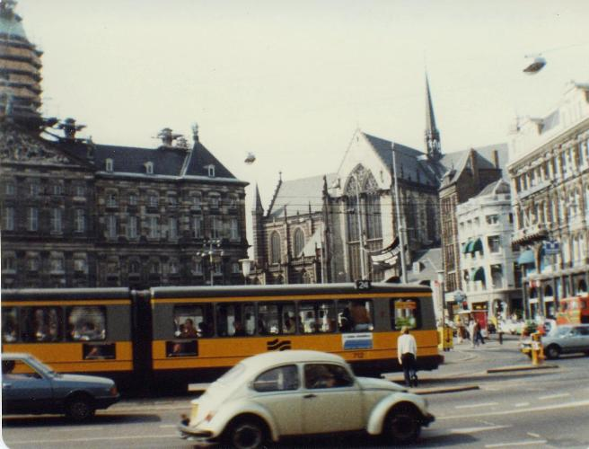

Inter Rail 1984 Day 1 & Day 2
Sunday 2nd September 1984
Woke up at 9.00am and finished doing the packing. Tried to buy a Sunday paper in the corner shop only to find
that they don't sell them. Got myself a good breakfast whilst listening to The Archers. Rang home to the Wrinklies to say tara.
Left the house at about 11.15am and caught the bus down to Lime Street. Bought my ticket and finally was able to buy a Sunday paper. Tried to
get visa style photos taken from the station machine but it was out of order.
The train left Lime Street on time but for some reason we went to visit Wigan en route and were so 15 minutes late into Manchester Victoria
and on through to Leeds.
Met Jon at Leeds station. Had a one hour journey to Hull where we met Mr and Mrs Partington, who had Jon's rucksack. Took a 50p bus ride to
the North Sea ferry terminal. Our ship was the Norstar, which is the sister ship to the Norland which went to the Falklands. Took 45 minutes
to get out of the lock gates in Hull Docks. The constant musak gets on your nerves a bit but we discovered it stops at 10.30pm.
Dinner on board ship was included in the price of the ticket. Minestrone soup; Gammon, pineapple, chips and carrots; cheese and biscuits
plus three cups of tea. Followed that up with a few drinks whilst watching James Bond in Moonraker. Decided against buying any duty free.
Bought a mini solar powered calculator to help with the currency translations for £4.95, plus a pack of cards. Retired to bed at 10.15pm
(11.15pm Dutch time), as this was probably going to be the last comfortable night's sleep for a while.
Our couchette was functional if a little cramped. Not much ventilation and only one blanket between two but not too much to complain about.
Decided that the plan tomorrow is to hitch from Europort to Rotterdam Centre.
Monday 3rd September 1984
My digital watch was supposed to go beep as an alarm clock at 6.15am but I woke up just before it. Got up and
had a quick blow on deck, then went straight to breakfast. Bacon, egg and tomato; tea and coffee plus toast; again all in the price of the
ticket.
Arrived in Europort. It's enormous. Review of our plan determined that we were going to struggle to get a hitch so bought a £2.50 bus ticket
to Rotterdam Central Station. At Customs we were questioned as to where we were going and how much money we had but were not searched.

We had a 20 minute coach ride to Rotterdam Central Station where we got the YHA address from the Tourist Information Office along with a map.
Jon changed some travellers cheques to guilders. We decided to walk to the YHA as it was only 15 minutes away. When we booked in it cost us
16 guilders for bed and breakfast i.e. about £4. The bedrooms were typically YHA – 8 to a room in 4 bunks. We dumped our gear and went for a
wander around town. Headed for the Euromast but decided that it was too windy and too expensive to give it a visit.
The old town turned out to be very picturesque with lots of arty crafty shops. Passed a house owned by a Dicky Willie Jnr! Decided that there
was not much else to see in Rotterdam, so had a picnic lunch and hopped on the train for an afternoon in Amsterdam. The sun came out to greet
us on our arrival. We spent 3 hours walking around the city centre.
There were some large, recognisable shops on the main streets such as C&A and also some Shambles, York like side streets. We spotted a nice
looking church, headed to have a look at it and found ourselves in the red light district. There were not just sex shops and porn film shows
but prostitutes standing in their doorways and front windows, some of them almost dressed.
We also found some nice boutiquey type shops and some very weird looking drugs selling stuff that wouldn't be legal in the UK. We ended up
in a yuck area with very unsavoury looking types and police everywhere. The atmosphere got very threatening so we left quickly. Decided to
catch the nearest and next tram and travelled on it for about 5 minutes. Got off and called into a Spar Shop to get some dinner before heading
back for our 1 hour train journey back to Rotterdam.
Caught the underground Metro back to the YHA. Had a sandwich tea followed by tea/coffee and beers. Alcohol and rock music in a YHA. Yippee!
Compared notes about the day.
1) £2 buys a 15 strip of tickets. These can be used on buses, trams or Metros all over the Netherlands. It's based on a zone system. 1 zone = 2 chunks; 3 zones = 4 chunks etc.
2) Holland is flat. Very flat and very soggy. Rotterdam is relatively new, having been demolished (by us) by bombing in WW2. It is relatively
uninteresting for 1 day. Amsterdam is fascinating, exciting, pornographic and a place to visit but not stay overnight.
3) YHA's over here are much more liberal minded. Predominant language used in English due to the large numbers of Brits (including 3 lads from
Neath.
Did our sums and after some initial confusion, worked out I was Guilderless, meaning I has spent just under £10 for the day. We decided
to call in on Brussels tomorrow, and if we don't like it, we'll give it a miss and move onto Luxembourg. Breakfast at 7.30am in order to
catch the 8.04am train. Lights out call came at the respectable time of midnight.
{kind=link}
{kind=link}
{kind=link}
{kind=link}
{kind=link}
{kind=link}